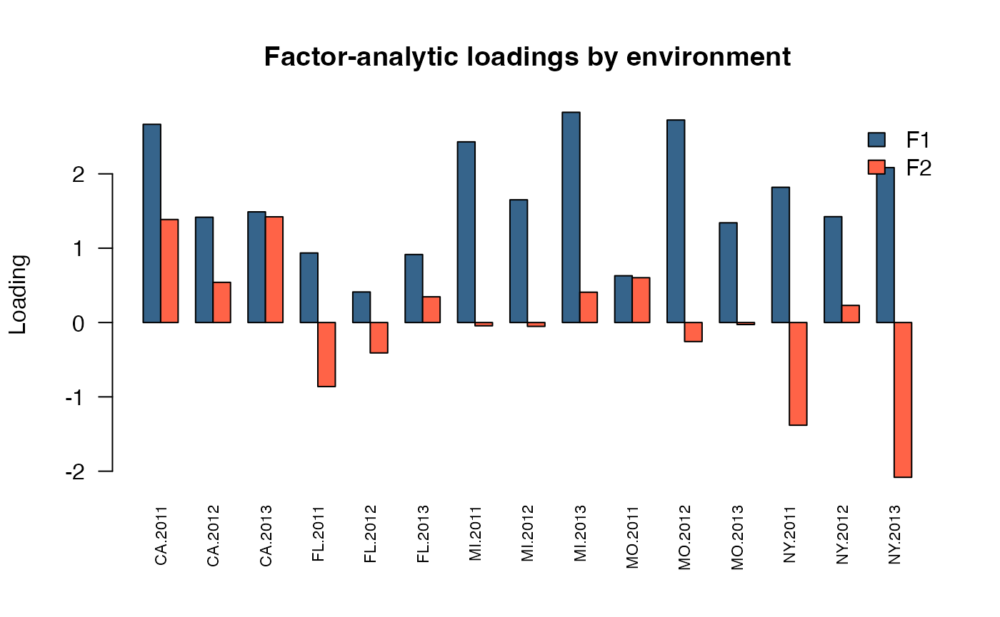
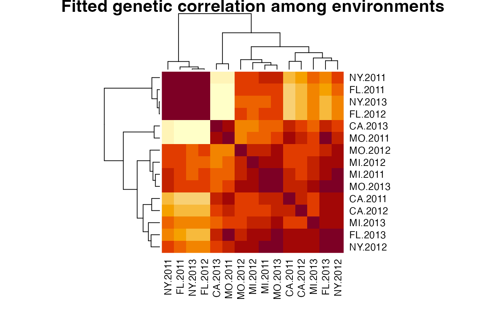

Factor analytic and reduced rank models in sommer
Giovanny Covarrubias-Pazaran
2026-09-26
Source:vignettes/sommer.fa.and.rr.models.Rmd
sommer.fa.and.rr.models.RmdThe sommer package was developed to provide R users with a flexible
univariate and multivariate linear mixed-model solver. Multi-environment
trial (MET) analyses often need a genetic covariance structure among
environments. A fully unstructured covariance (usm())
captures every pairwise environment relationship but requires
parameters for
environments, which quickly becomes difficult to estimate reliably as
the number of environments grows. Factor-analytic (FA) and reduced-rank
(RR) models approximate that same covariance with far fewer parameters
by assuming that genotype-by-environment interaction is driven by a
small number of latent factors.
This vignette focuses on the fam() and
rrcm() covariance-shaping factors used inside
vsm(), and on the
loadings_mmes()/scores_mmes() helper functions
used to extract and visualize their fitted quantities.
SECTION 1: Theory
- Why reduce the cross-environment covariance
- The factor-analytic (FA) model
- The reduced-rank (RR) model
- Choosing k and comparing to other structures
SECTION 2: Fitting factor-analytic and reduced-rank models
SECTION 3: Extracting loadings, scores, and diagnostic plots
- Loadings and specific variances
- Genotype scores
- Percentage of variance explained
- Loadings plot
- Genotype scores biplot
- Heatmap of the fitted genetic correlation matrix
SECTION 1: Theory
1) Why reduce the cross-environment covariance
Let
be the number of environments and
the
genetic covariance matrix among them. An unstructured model estimates
every variance and covariance directly,
working parameters after removing the single overall scale owned by
vsm(). As
grows, this saturated model becomes weakly identified relative to the
available genotype replication, and its estimates become unstable.
Diagonal (dsm()) and compound-symmetry (csm())
models are far more parsimonious but assume, respectively, no genetic
correlation among environments or one common correlation everywhere.
Factor-analytic and reduced-rank models sit between these extremes: they
estimate genuine environment-specific covariance patterns while
controlling the number of parameters through a rank
.
2) The factor-analytic (FA) model
The FA model represents the environment covariance shape as
where
is a
loading matrix and
is a diagonal matrix of environment-specific variances. Each
environment’s genetic variance is split into a part explained by the
common latent factors
()
and a part unique to that environment
().
vsm() still owns the single overall variance scale, so
fam(x, k) reports a normalized shape with
;
the number of estimated working parameters for
factors and
environments is
the first term for the (rotationally-constrained, lower-triangular) loadings and the second for the environment-specific variance ratios.
3) The reduced-rank (RR) model
The RR model uses the same loading structure but fixes the environment-specific remainder to be homogeneous:
rrcm(x, k) therefore has
working parameters: exactly
fewer than fam(x, k), because it does not estimate separate
environment-specific variances. RR is a restricted (nested) special case
of FA in which every environment is assumed to have the same
residual/specific variance after accounting for the
common factors. It is useful when there is not enough replication to
support
separate specific variances, or as a more parsimonious first
approximation before fitting the full FA model.
4) Choosing k and comparing to other structures
Increasing
moves the model continuously from compound symmetry-like behavior
(,
not directly supported, but conceptually the limit) toward the saturated
unstructured model
().
In practice
is chosen small enough to remain identifiable and interpretable (often
1-3 factors), and increased only if it meaningfully improves the
likelihood. Because RR is nested inside FA with the same
,
anova.mmes() can be used to test whether the extra
FA specific-variance parameters are supported by the data.
SECTION 2: Fitting factor-analytic and reduced-rank models
1) Data
We use the DT_h2 multi-environment potato yield dataset,
which has 15 environments (Env, combining location and
year) and 41 genotypes (Name).
## Loading required package: Matrix## Loading required package: MASS## Loading required package: crayon## Loading required package: enhancer## [1] 15## [1] 41
head(DT)## Name Env Loc Year Block y
## 67 MSL007-B CA.2011 CA 2011 CA.2011.2 5
## 105 MSL007-B CA.2011 CA 2011 CA.2011.1 6
## 308 MSK061-4 CA.2011 CA 2011 CA.2011.2 9
## 393 MSK061-4 CA.2011 CA 2011 CA.2011.1 10
## 469 MSR169-8Y CA.2011 CA 2011 CA.2011.1 11
## 471 NY148 CA.2011 CA 2011 CA.2011.1 112) Factor-analytic model with fam()
fitFA <- mmes(y ~ Env,
random = ~ vsm(fam(Env, 2), ism(Name)),
rcov = ~ units,
nIters = 150, verbose = FALSE,
data = DT)## Solver selected: ldlt
summary(fitFA)$varcomp## term factor parameter estimate
## 1 vsm(fam(Env, 2), ism(Name)) fa loading[CA.2011,F1] 3.0046519693
## 2 vsm(fam(Env, 2), ism(Name)) fa loading[CA.2012,F1] 1.5060193694
## 3 vsm(fam(Env, 2), ism(Name)) fa loading[CA.2013,F1] 1.9765890147
## 4 vsm(fam(Env, 2), ism(Name)) fa loading[FL.2011,F1] 0.4327513625
## 5 vsm(fam(Env, 2), ism(Name)) fa loading[FL.2012,F1] 0.1762433429
## 6 vsm(fam(Env, 2), ism(Name)) fa loading[FL.2013,F1] 0.9712471982
## 7 vsm(fam(Env, 2), ism(Name)) fa loading[MI.2011,F1] 2.1362610328
## 8 vsm(fam(Env, 2), ism(Name)) fa loading[MI.2012,F1] 1.4410339019
## 9 vsm(fam(Env, 2), ism(Name)) fa loading[MI.2013,F1] 2.6972962978
## 10 vsm(fam(Env, 2), ism(Name)) fa loading[MO.2011,F1] 0.8361967123
## 11 vsm(fam(Env, 2), ism(Name)) fa loading[MO.2012,F1] 2.2991867809
## 12 vsm(fam(Env, 2), ism(Name)) fa loading[MO.2013,F1] 1.1777648240
## 13 vsm(fam(Env, 2), ism(Name)) fa loading[NY.2011,F1] 0.9770960169
## 14 vsm(fam(Env, 2), ism(Name)) fa loading[NY.2012,F1] 1.3695063236
## 15 vsm(fam(Env, 2), ism(Name)) fa loading[NY.2013,F1] 0.8890331795
## 16 vsm(fam(Env, 2), ism(Name)) fa loading[CA.2012,F2] 0.1733638045
## 17 vsm(fam(Env, 2), ism(Name)) fa loading[CA.2013,F2] -0.5753080098
## 18 vsm(fam(Env, 2), ism(Name)) fa loading[FL.2011,F2] 1.1958463443
## 19 vsm(fam(Env, 2), ism(Name)) fa loading[FL.2012,F2] 0.5523615628
## 20 vsm(fam(Env, 2), ism(Name)) fa loading[FL.2013,F2] 0.1147705678
## 21 vsm(fam(Env, 2), ism(Name)) fa loading[MI.2011,F2] 1.1597749640
## 22 vsm(fam(Env, 2), ism(Name)) fa loading[MI.2012,F2] 0.8073819646
## 23 vsm(fam(Env, 2), ism(Name)) fa loading[MI.2013,F2] 0.9421242225
## 24 vsm(fam(Env, 2), ism(Name)) fa loading[MO.2011,F2] -0.2448474486
## 25 vsm(fam(Env, 2), ism(Name)) fa loading[MO.2012,F2] 1.4835249937
## 26 vsm(fam(Env, 2), ism(Name)) fa loading[MO.2013,F2] 0.6426967739
## 27 vsm(fam(Env, 2), ism(Name)) fa loading[NY.2011,F2] 2.0648636207
## 28 vsm(fam(Env, 2), ism(Name)) fa loading[NY.2012,F2] 0.4524597868
## 29 vsm(fam(Env, 2), ism(Name)) fa loading[NY.2013,F2] 2.8085407257
## 30 vsm(fam(Env, 2), ism(Name)) fa specific_variance[CA.2011] 6.6632027594
## 31 vsm(fam(Env, 2), ism(Name)) fa specific_variance[CA.2012] 3.0472827397
## 32 vsm(fam(Env, 2), ism(Name)) fa specific_variance[CA.2013] 3.6124438637
## 33 vsm(fam(Env, 2), ism(Name)) fa specific_variance[FL.2011] 0.0508478108
## 34 vsm(fam(Env, 2), ism(Name)) fa specific_variance[FL.2012] 0.0001836361
## 35 vsm(fam(Env, 2), ism(Name)) fa specific_variance[FL.2013] 0.0001659060
## 36 vsm(fam(Env, 2), ism(Name)) fa specific_variance[MI.2011] 3.0531255671
## 37 vsm(fam(Env, 2), ism(Name)) fa specific_variance[MI.2012] 2.3170425642
## 38 vsm(fam(Env, 2), ism(Name)) fa specific_variance[MI.2013] 11.2709597520
## 39 vsm(fam(Env, 2), ism(Name)) fa specific_variance[MO.2011] 0.0002067681
## 40 vsm(fam(Env, 2), ism(Name)) fa specific_variance[MO.2012] 9.0140947799
## 41 vsm(fam(Env, 2), ism(Name)) fa specific_variance[MO.2013] 0.0270998954
## 42 vsm(fam(Env, 2), ism(Name)) fa specific_variance[NY.2011] 0.0003465884
## 43 vsm(fam(Env, 2), ism(Name)) fa specific_variance[NY.2012] 0.0003229576
## 44 vsm(fam(Env, 2), ism(Name)) fa specific_variance[NY.2013] 0.3821381921
## 45 vsm(ism(units)) sigma2 sigma2 3.9687347977
## StdError Zratio
## 1 0.4812859559 6.24296623
## 2 0.3235430791 4.65477232
## 3 0.3977827445 4.96901649
## 4 0.3309592041 1.30756709
## 5 0.2181785448 0.80779411
## 6 0.2507143110 3.87392006
## 7 0.5183320053 4.12141448
## 8 0.3278907097 4.39486042
## 9 0.6252856346 4.31370265
## 10 0.2691060856 3.10731253
## 11 0.5849889705 3.93030791
## 12 0.2466671497 4.77471291
## 13 0.4844438907 2.01694362
## 14 0.2244530298 6.10152745
## 15 0.5776411754 1.53907515
## 16 0.4104203429 0.42240549
## 17 0.5213065419 -1.10358870
## 18 0.3188515393 3.75048007
## 19 0.2066366275 2.67310578
## 20 0.3280556909 0.34985087
## 21 0.5381212174 2.15522995
## 22 0.3544931897 2.27756693
## 23 0.7297398317 1.29104125
## 24 0.3274506805 -0.74773840
## 25 0.6537251353 2.26934060
## 26 0.2962785986 2.16923118
## 27 0.3687470536 5.59967490
## 28 0.2942352818 1.53774824
## 29 0.4146274045 6.77364954
## 30 1.7247107218 3.86337412
## 31 0.9384560442 3.24712357
## 32 1.3146082061 2.74792432
## 33 0.5467695913 0.09299678
## 34 0.0010612855 0.17303180
## 35 0.0009588206 0.17303138
## 36 1.4162533552 2.15577641
## 37 0.7755660077 2.98755044
## 38 2.7452616187 4.10560497
## 39 0.0011949774 0.17303097
## 40 2.3225036609 3.88119723
## 41 0.4136514530 0.06551384
## 42 0.0020030379 0.17303136
## 43 0.0018664397 0.17303403
## 44 1.2149576840 0.31452798
## 45 0.1716324787 23.123448593) Reduced-rank model with rrcm()
fitRR <- mmes(y ~ Env,
random = ~ vsm(rrcm(Env, 2), ism(Name)),
rcov = ~ units,
nIters = 150, verbose = FALSE,
data = DT)## Solver selected: ldlt
summary(fitRR)$varcomp## term factor parameter estimate
## 1 vsm(rrcm(Env, 2), ism(Name)) rr loading[CA.2011,F1] 3.39046616
## 2 vsm(rrcm(Env, 2), ism(Name)) rr loading[CA.2012,F1] 1.50769301
## 3 vsm(rrcm(Env, 2), ism(Name)) rr loading[CA.2013,F1] 1.73699068
## 4 vsm(rrcm(Env, 2), ism(Name)) rr loading[FL.2011,F1] 0.59674581
## 5 vsm(rrcm(Env, 2), ism(Name)) rr loading[FL.2012,F1] 0.27538637
## 6 vsm(rrcm(Env, 2), ism(Name)) rr loading[FL.2013,F1] 0.72682397
## 7 vsm(rrcm(Env, 2), ism(Name)) rr loading[MI.2011,F1] 2.53302873
## 8 vsm(rrcm(Env, 2), ism(Name)) rr loading[MI.2012,F1] 1.58481366
## 9 vsm(rrcm(Env, 2), ism(Name)) rr loading[MI.2013,F1] 3.59721792
## 10 vsm(rrcm(Env, 2), ism(Name)) rr loading[MO.2011,F1] 0.84339674
## 11 vsm(rrcm(Env, 2), ism(Name)) rr loading[MO.2012,F1] 3.00738952
## 12 vsm(rrcm(Env, 2), ism(Name)) rr loading[MO.2013,F1] 1.25703474
## 13 vsm(rrcm(Env, 2), ism(Name)) rr loading[NY.2011,F1] 1.82343227
## 14 vsm(rrcm(Env, 2), ism(Name)) rr loading[NY.2012,F1] 1.24762170
## 15 vsm(rrcm(Env, 2), ism(Name)) rr loading[NY.2013,F1] 1.60626434
## 16 vsm(rrcm(Env, 2), ism(Name)) rr loading[CA.2012,F2] 0.48918153
## 17 vsm(rrcm(Env, 2), ism(Name)) rr loading[CA.2013,F2] -1.32604766
## 18 vsm(rrcm(Env, 2), ism(Name)) rr loading[FL.2011,F2] 0.74768031
## 19 vsm(rrcm(Env, 2), ism(Name)) rr loading[FL.2012,F2] 0.25002863
## 20 vsm(rrcm(Env, 2), ism(Name)) rr loading[FL.2013,F2] 0.35353424
## 21 vsm(rrcm(Env, 2), ism(Name)) rr loading[MI.2011,F2] 1.12513389
## 22 vsm(rrcm(Env, 2), ism(Name)) rr loading[MI.2012,F2] 0.48254139
## 23 vsm(rrcm(Env, 2), ism(Name)) rr loading[MI.2013,F2] -1.51313837
## 24 vsm(rrcm(Env, 2), ism(Name)) rr loading[MO.2011,F2] -0.04115861
## 25 vsm(rrcm(Env, 2), ism(Name)) rr loading[MO.2012,F2] 2.50009018
## 26 vsm(rrcm(Env, 2), ism(Name)) rr loading[MO.2013,F2] -0.15937520
## 27 vsm(rrcm(Env, 2), ism(Name)) rr loading[NY.2011,F2] 1.66324240
## 28 vsm(rrcm(Env, 2), ism(Name)) rr loading[NY.2012,F2] 0.30614965
## 29 vsm(rrcm(Env, 2), ism(Name)) rr loading[NY.2013,F2] 1.29290596
## 30 vsm(rrcm(Env, 2), ism(Name)) rr common_specific_variance 1.76788204
## 31 vsm(ism(units)) sigma2 sigma2 4.24056224
## StdError Zratio
## 1 0.3436971 9.86469144
## 2 0.2675313 5.63557621
## 3 0.3384232 5.13259997
## 4 0.3826875 1.55935525
## 5 0.2853064 0.96523033
## 6 0.3589753 2.02471871
## 7 0.4309543 5.87771948
## 8 0.2717983 5.83084416
## 9 0.4282884 8.39905564
## 10 0.3994517 2.11138630
## 11 0.5008905 6.00408604
## 12 0.3093412 4.06358627
## 13 0.5207888 3.50128909
## 14 0.2852322 4.37405573
## 15 0.3294797 4.87515410
## 16 0.3179273 1.53865838
## 17 0.3608453 -3.67483745
## 18 0.4074074 1.83521543
## 19 0.3289056 0.76018347
## 20 0.4945683 0.71483406
## 21 0.4033748 2.78930167
## 22 0.2967954 1.62583864
## 23 0.4352931 -3.47613698
## 24 0.4274046 -0.09629893
## 25 0.4542493 5.50378465
## 26 0.3707700 -0.42984917
## 27 0.4567274 3.64165263
## 28 0.3290315 0.93045693
## 29 0.3314473 3.90078843
## 30 0.2239370 7.89455218
## 31 0.2034219 20.846144094) Comparing FA and RR
Because rrcm(Env, 2) is nested inside
fam(Env, 2) (both use rank 2, but RR fixes the specific
variances to be equal), we can compare them with a likelihood ratio
test:
c(AIC_FA = fitFA$AIC, AIC_RR = fitRR$AIC)## AIC_FA AIC_RR
## -144.60404 -72.58775
anova.mmes(fitFA, fitRR)## Likelihood ratio test for mixed models
## ==============================================================
## Df AIC BIC loLik Chisq ChiDf PrChisq
## mod1 60 -144.60404 -73.042200 87.30202
## mod2 46 -72.58775 -1.025909 51.29387 72.01629 14 8.30643229326153e-10 ***
## ==============================================================
## Signif. codes: 0 '***' 0.001 '**' 0.01 '*' 0.05 '.' 0.1 ' ' 1## Df AIC BIC loLik Chisq ChiDf PrChisq
## mod1 60 -144.60404 -73.042200 87.30202
## mod2 46 -72.58775 -1.025909 51.29387 72.01629 14 8.30643229326153e-10 ***A lower AIC/BIC and a significant likelihood ratio test favor the less restrictive FA model whenever the data support heterogeneous environment-specific variances.
SECTION 3: Extracting loadings, scores, and diagnostic plots
1) Loadings and specific variances
loadings_mmes() reconstructs the fitted, normalized
loadings
and specific variances
so that
reproduces the fitted covariance matrix exactly.
faInfo <- loadings_mmes(fitFA)
round(faInfo$loadings, 3)## F1 F2
## CA.2011 2.666 1.386
## CA.2012 1.416 0.541
## CA.2013 1.489 1.422
## FL.2011 0.935 -0.862
## FL.2012 0.411 -0.409
## FL.2013 0.915 0.346
## MI.2011 2.430 -0.044
## MI.2012 1.651 -0.052
## MI.2013 2.828 0.408
## MO.2011 0.629 0.603
## MO.2012 2.724 -0.256
## MO.2013 1.341 -0.027
## NY.2011 1.819 -1.382
## NY.2012 1.424 0.230
## NY.2013 2.084 -2.082
round(faInfo$specific, 3)## CA.2011 CA.2012 CA.2013 FL.2011 FL.2012 FL.2013 MI.2011 MI.2012 MI.2013 MO.2011
## 1.682 0.769 0.912 0.013 0.000 0.000 0.771 0.585 2.845 0.000
## MO.2012 MO.2013 NY.2011 NY.2012 NY.2013
## 2.276 0.007 0.000 0.000 0.096
faInfo$sigma2## [1] 15.69114
rrInfo <- loadings_mmes(fitRR)
round(rrInfo$specific, 3)## CA.2011 CA.2012 CA.2013 FL.2011 FL.2012 FL.2013 MI.2011 MI.2012 MI.2013 MO.2011
## 0.485 0.485 0.485 0.485 0.485 0.485 0.485 0.485 0.485 0.485
## MO.2012 MO.2013 NY.2011 NY.2012 NY.2013
## 0.485 0.485 0.485 0.485 0.485Notice that rrInfo$specific is constant across
environments: this is the direct consequence of rrcm()
fixing a homogeneous specific variance, unlike the heterogeneous values
in faInfo$specific.
2) Genotype scores
scores_mmes() predicts each genotype’s position on the
latent factors from its BLUPs, the fitted loadings, and the fitted
covariance.
faScores <- scores_mmes(fitFA)
head(faScores)## F1 F2
## A01143-3C 1.183736273 1.37988696
## AC00206-2W 0.008468638 -0.33814041
## AC01151-5W 0.548573394 -0.09987241
## AC03433-1W -1.025629280 -0.10444015
## AC03452-2W 2.001524937 -0.18603067
## AC05153-1W -1.175674298 -0.373515023) Percentage of variance explained
A standard factor-analytic diagnostic is the proportion of total genetic variance attributed to each latent factor:
varPerFactor <- colSums(faInfo$loadings^2)
totalVar <- sum(faInfo$loadings^2) + sum(faInfo$specific)
propExplained <- varPerFactor / totalVar
round(100 * propExplained, 1)## F1 F2
## 69.0 17.14) Loadings plot
Plotting the loadings by environment shows which environments are most associated with each latent factor.
barplot(t(faInfo$loadings), beside = TRUE,
col = c("steelblue4", "tomato"),
las = 2, cex.names = 0.7,
ylab = "Loading",
main = "Factor-analytic loadings by environment")
legend("topright", legend = colnames(faInfo$loadings),
fill = c("steelblue4", "tomato"), bty = "n")
6) Heatmap of the fitted genetic correlation matrix
The normalized loadings and specific variances returned by
loadings_mmes() can be combined directly into the fitted
genetic covariance, and then converted to a correlation matrix for
visualization.
Sigma <- faInfo$sigma2 * (
faInfo$loadings %*% t(faInfo$loadings) + diag(faInfo$specific)
)
corMat <- cov2cor(Sigma)
heatmap(corMat, symm = TRUE,
main = "Fitted genetic correlation among environments")
Environments with a strong positive fitted correlation cluster together in the heatmap, while environments explained by different latent factors, or with a large specific variance, appear less correlated with the rest.
Literature
Covarrubias-Pazaran G. 2016. Genome assisted prediction of quantitative traits using the R package sommer. PLoS ONE 11(6):1-15.
Smith AB, Cullis BR, Thompson R. 2001. Analyzing variety by environment data using multiplicative mixed models and expectations of trials. Biometrics 57(4).
Thompson R, Cullis B, Smith A, Gilmour A. 2003. A sparse implementation of the average information algorithm for factor analytic and reduced rank variance models. Australian & New Zealand Journal of Statistics 45(4).
Gilmour AR, Thompson R, Cullis BR. 1995. Average Information REML: An efficient algorithm for variance parameter estimation in linear mixed models. Biometrics 51:1440-1450.